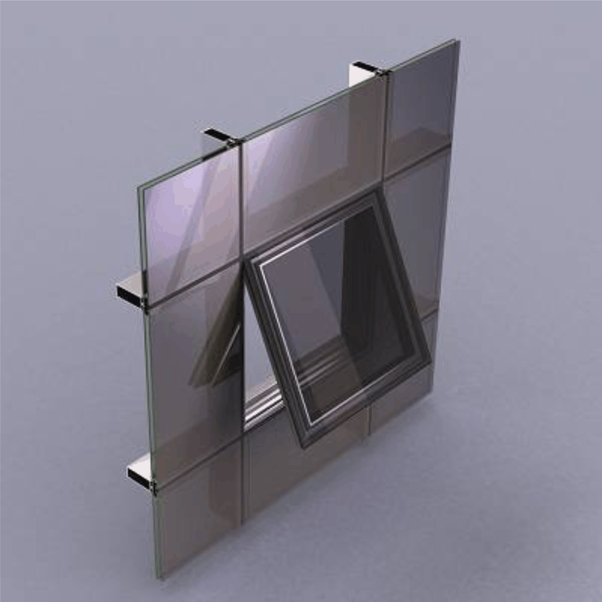
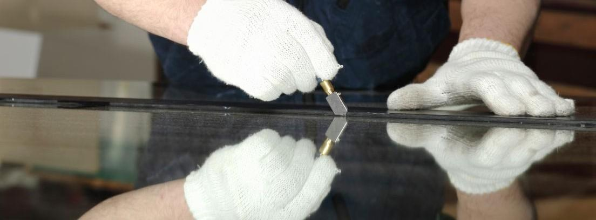
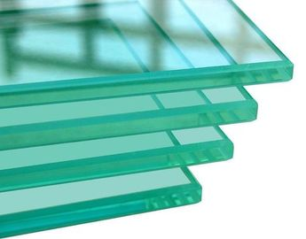
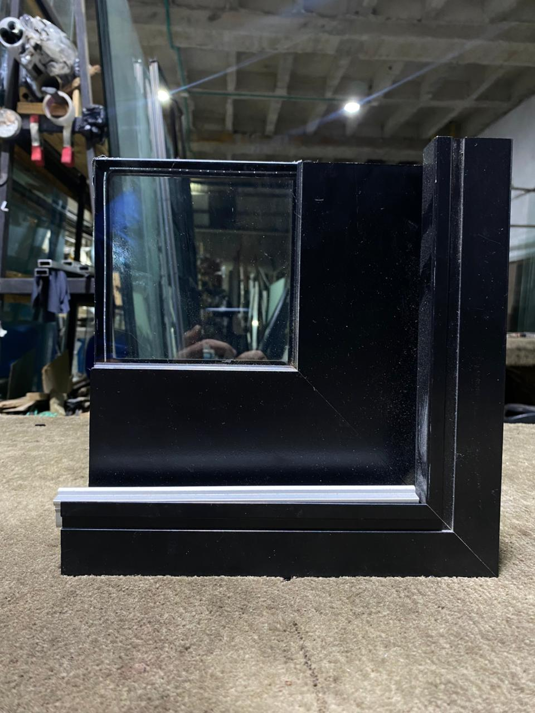
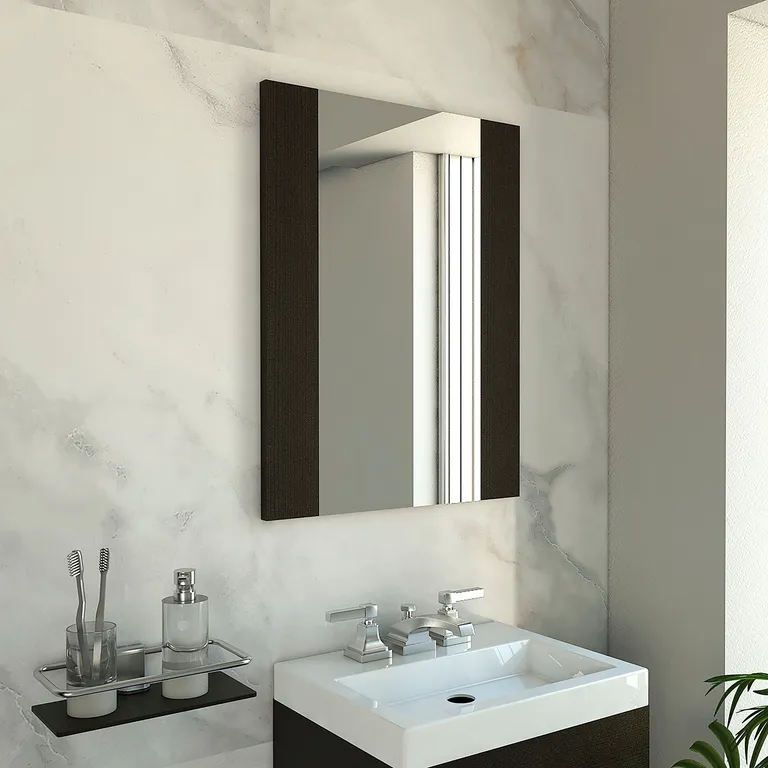
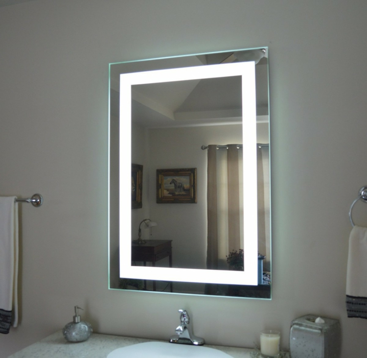

Soluciones Integrales en Vidrio y Aluminio
Desde cabinas de baño residenciales hasta complejas fachadas corporativas. Cada solución es fabricada e instalada con la más alta precisión técnica.

Cabinas de Baño
Diseñamos y fabricamos cabinas de baño en vidrio templado de 8 y 10 mm con herrajes en acero inoxidable 304. Sistemas sin marco (frameless) y semienmarque para una estética limpia y moderna. Instalación en 24 horas sin obra ni polvo.
- Vidrio 8 – 10 mm templado
- Herrajes anticorrosión
- Sistema frameless y semienmarque
- Puertas batientes y corredizas

Fachadas Flotantes
Sistemas de acristalamiento estructural para edificios y locales comerciales. Las fachadas flotantes crean una envolvente de vidrio continua que potencia la visibilidad del negocio y maximiza el aprovechamiento de la luz natural.
- Sistemas spider y perfil oculto
- Vidrio termoacústico
- Resistencia estructural al viento
- Acabado de alta gama

Puertas Tipo Banco
Puertas en vidrio laminado de seguridad con perfilería de aluminio estructural de alta resistencia. Ideales para entidades bancarias, clínicas, oficinas jurídicas y cualquier espacio que requiera control de acceso con presencia corporativa.
- Vidrio laminado antivandálico
- Sistemas de cierre automático
- Fabricación a medida
- Uso comercial e institucional

Barandas y Pasamanos
Fabricamos barandas y pasamanos en acero inoxidable 304 con vidrio templado o laminado. Diseño elegante que combina seguridad estructural con máxima transparencia visual. Cumplimiento con normativa NSR-10 en todos los proyectos.
- Acero inoxidable 304
- Normativa NSR-10
- Escaleras y balcones
- Máxima transparencia visual

Ventanas de Aluminio
Fabricamos ventanas en diversas series y sistemas de aluminio extruido de alta calidad. Desde ventanas corredizas para uso residencial hasta sistemas proyectantes y fijos para proyectos arquitectónicos de mayor escala.
- Múltiples series disponibles
- Aislamiento térmico y acústico
- Colores anodizados y lacados
- Cierres herméticos de precisión

Pérgolas
Estructuras en aluminio y vidrio para terrazas, zonas sociales y patios. Las pérgolas de VITRIALUM DE ORIENTE combinan funcionalidad con diseño, protegiendo de la lluvia y el sol sin perder la conexión visual con el exterior.
- Filtro UV certificado
- Estanqueidad total
- Estructura robusta en aluminio
- Confort térmico exterior

Cerramientos de Cristal
Cortinas de Vidrio y Cerramientos Panorámicos. Transformamos sus espacios con sistemas de vidrio templado y perfiles de aluminio de alta resistencia. Soluciones elegantes sin marcos verticales para una vista ininterrumpida y máxima protección.
- Uso comercial y retail
- Acabados premium
- Sistemas de cierre seguros
- Fabricación totalmente a medida

Espejo al Corte
Suministramos y cortamos espejos con precisión milimétrica para todo tipo de aplicaciones residenciales y comerciales. Cada pieza es elaborada con vidrio de alta reflectividad, cantos pulidos a diamante y acabado libre de distorsiones. Compatibles con sistemas de retroiluminación LED para entornos de alto nivel.
- Cortes personalizados a medida exacta
- Cantos pulidos y biselados
- Aplicaciones residenciales y comerciales
- Compatible con retroiluminación LED

Vidrio Templado
Procesamos cristales mediante tratamiento térmico controlado que incrementa la resistencia mecánica y térmica hasta 5 veces superior al vidrio ordinario. Al romperse, se fragmenta en pequeños trozos redondeados que no generan heridas.
- Resistencia térmica certificada
- 5× más resistente que vidrio crudo
- Espesores de 4 a 19 mm
- Certificación de seguridad

Vidrio Laminado
Dos o más láminas de vidrio unidas por una película elástica de PVB que evita el desprendimiento de fragmentos en caso de rotura. Ofrece protección anti-intrusión, aislamiento acústico superior y protección UV.
- Protección anti-intrusión
- Aislamiento acústico 40 dB
- Seguridad ante rotura
- Película PVB multi-capa

Vidrio Esmerilado y Escarchado
Tratamientos superficiales de sandblasting y escarchado para crear zonas de privacidad sin sacrificar el paso de la luz. Ideal para divisiones de oficina, baños, fachadas y aplicaciones decorativas en general.
- Opacidad controlada
- Permite paso de luz natural
- Diseños y logotipos personalizados
- Acabado mate elegante

Vidrio Grabado
Grabado artístico en vidrio mediante técnicas de chorro de arena para crear texturas, motivos decorativos, logotipos corporativos y diseños únicos. Cada pieza es un trabajo artesanal con identidad propia.
- Diseños únicos y exclusivos
- Identidad corporativa
- Aplicaciones residenciales
- Acabado artesanal premium

Espejos Biselados
Espejos con bordes biselados de alta precisión que aportan elegancia y profundidad a cualquier espacio. Disponibles en diferentes anchos de bisel y espesores. Amplían visualmente los ambientes y aportan luminosidad.
- Biseles de 1 a 5 cm de ancho
- Vidrio extra-claro disponible
- Fabricación a medida
- Retroiluminación LED opcional

Vidrio Plano de 10 mm
El vidrio plano de 10 mm representa el estándar arquitectónico de alto desempeño, combinando grosor estructural con versatilidad estética. Ideal para mesas, divisiones, fachadas y aplicaciones decorativas de primer nivel. Cada pieza es procesada con corte de precisión y cantos pulidos a diamante para un acabado impecable.
- Corte de precisión
- Cantos pulidos
- Aplicaciones decorativas y estructurales
- Entrega segura en toda la región

Sistema Antiruido Termoacústico
Sistema europeo de acristalamiento de alto rendimiento compuesto por dos hojas de vidrio laminado separadas por una cámara sellada rellena de gas argón. Esta combinación ofrece un aislamiento acústico y térmico excepcional, eliminando condensación, humedad interior y pérdidas energéticas. Una solución de arquitectura premium para entornos urbanos, residencias de lujo y edificios corporativos de exigencia máxima.
- Aislamiento acústico de alto espectro
- Eficiencia térmica con gas argón
- Elimina condensación y humedad
- Tecnología y normativa europea

Vidrio VH con Cámara
Vidrio aislante laminado con cámara de aire hermética, desarrollado bajo estándares europeos de eficiencia energética. Combina las propiedades del vidrio laminado de seguridad con el control térmico y acústico de los sistemas de doble acristalamiento. La solución definitiva para fachadas, ventanería de alto tráfico y proyectos arquitectónicos que exigen rendimiento y elegancia sin concesiones.
- Vidrio laminado aislante de cámara
- Alta eficiencia energética
- Aislamiento acústico reforzado
- Aplicaciones arquitectónicas premium

Espejo Pulido y Brillado
Espejos de alta reflectividad con cantos pulidos y brillados a máquina para un acabado premium de nivel joyero. El proceso de brillado elimina toda aspereza visual en los bordes, otorgando a cada pieza una presencia elegante y segura al tacto. Perfectos para residencias de lujo, hoteles, consultorios y espacios comerciales de alto diseño.
- Cantos pulidos y brillados a máquina
- Acabado premium libre de imperfecciones
- Uso residencial y comercial
- Fabricación a medida exacta

Espejos Flotantes
Espejos diseñados bajo el concepto de levitación visual, instalados mediante sistemas de anclaje oculto que eliminan toda la herrería visible. El resultado es una superficie reflectante limpia que parece suspendida en el muro, creando un efecto arquitectónico de gran impacto. Compatible con retroiluminación LED perimetral para potenciar el efecto flotante en cualquier ambiente.
- Sistema de anclaje 100% oculto
- Efecto visual de levitación
- Estilo moderno y minimalista
- Compatible con retroiluminación LED

Espejos con Iluminación
Espejos de diseño contemporáneo con iluminación LED integrada de bajo consumo energético. La tira luminosa perimetral o retroiluminada crea una atmósfera cálida y funcional, perfecta para baños, tocadores, vestidores y locales comerciales. Cada espejo es fabricado a medida con selección de temperatura de color según el ambiente.
- LED de bajo consumo integrado
- Temperatura de color seleccionable
- Baños, tocadores y vestidores
- Aplicaciones comerciales y retail
Lo que Nos Diferencia
Combinamos precisión técnica y acabados de alta calidad para transformar tus espacios con total seguridad y elegancia.
Corte de Precisión
Ajuste milimétrico y personalizado para todo tipo de proyectos. Diseñamos e instalamos divisiones, fachadas y estructuras adaptadas exactamente a la medida de tu espacio.
Vidrio Templado de Seguridad
Procesos térmicos que garantizan un cristal hasta 5 veces más resistente. Disfruta de la tranquilidad de un material altamente duradero y seguro para tu familia o negocio.
Acabados y Pulido Premium
perfectamente suavizados y brillantes, totalmente seguros al tacto. Cuidamos cada detalle estético para que cada pieza luzca impecable y sofisticada.
Entrega y Cuidado Especializado
Transporte y manejo cuidadoso de cada pieza. Nos aseguramos de que tus vidrios y estructuras lleguen en perfectas condiciones y listos para una instalación impecable.
Cumplimiento de Normas Técnicas
Trabajamos bajo los más altos estándares de seguridad y resistencia vial y estructural (NSR-10), garantizando que tu inversión sea estética, firme y duradera.
Respaldo y Garantía Postventa
Te acompañamos antes, durante y después de la instalación. Ofrecemos asistencia técnica y ajuste de herrajes para que todo siga funcionando como el primer día.
Sistemas de Ventanería
Trabajamos con los sistemas de aluminio más reconocidos del mercado colombiano, garantizando compatibilidad, disponibilidad de repuestos y estándares de calidad comprobados.
Ventanas corredizas estándar para uso residencial. Relación calidad-precio óptima.
Mayor hermeticidad y aislamiento. Ideal para zonas con alta exposición climática.
Perfil robusto para vanos de gran dimensión. Uso residencial y semi-comercial.
Sistema de alta gama para proyectos arquitectónicos de envergadura y diseño premium.
Módulos fijos y proyectantes. Versatilidad total para diseños mixtos y ventilación controlada.
¿Hablamos de tu Próximo Proyecto?
Asesoría técnica sin costo en todo el Oriente Antioqueño. Un especialista te atiende de inmediato.